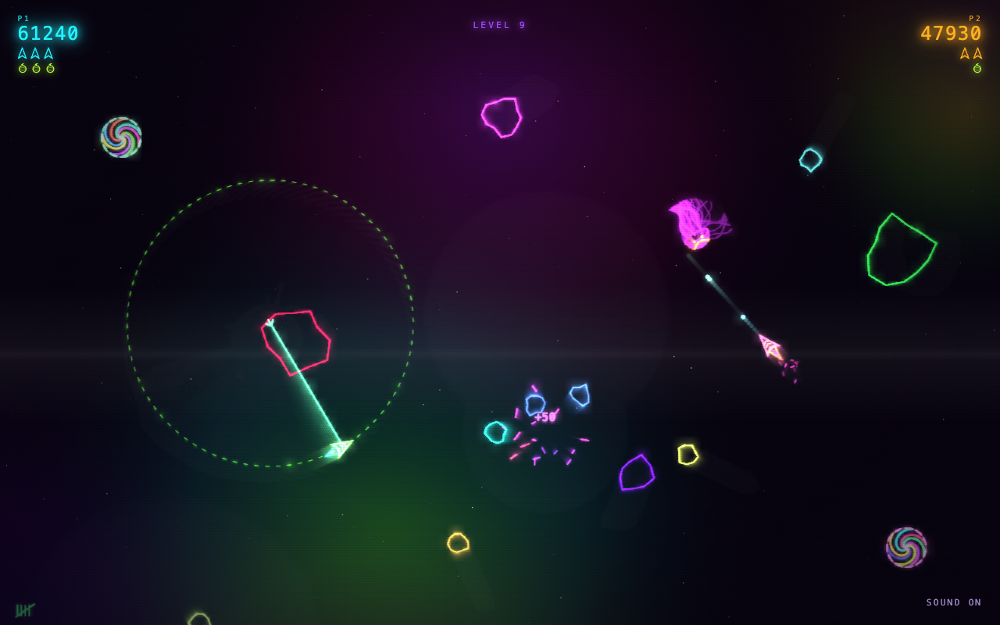
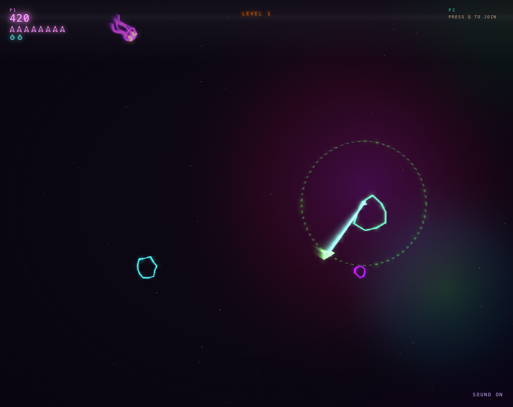
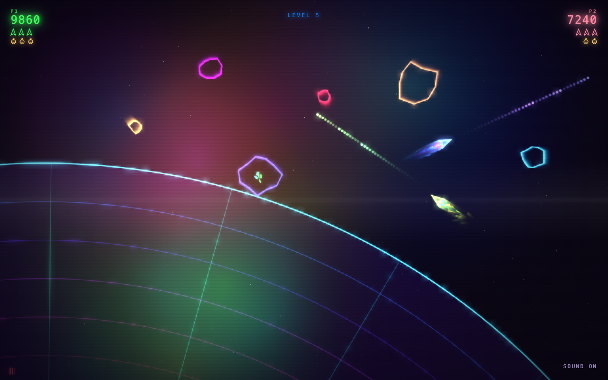
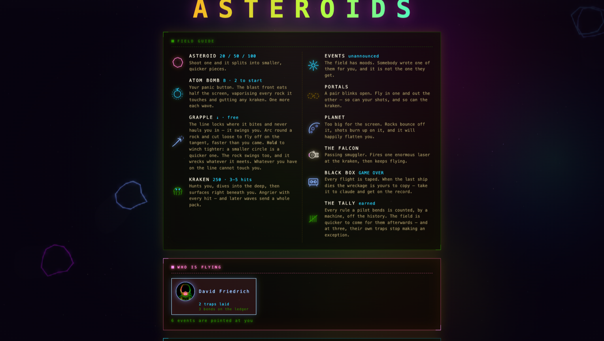

HYPERCOLOR ASTEROIDS
A neon vector rewrite of the 1979 arcade game. Canvas graphics, Web Audio music, hand written HTML, CSS and JavaScript. No build step, no dependencies, no network.
It is two games in one. On the screen: rocks, portals, a kraken. In the repo: a slow multiplayer game between the developers who share it. The git history is the save file, the commit log is the leaderboard, and nobody has to be online at the same time. That half is explained in The game behind the game — you can also ignore it and just fly.

Play
Open index.html in a browser. If your browser is fussy about file://, serve
it instead:
python3 -m http.server 8000
Two pilots, one screen. Player two can drop in mid-wave, and anyone out of lives can buy back in.
| Player 1 | Player 2 | |
|---|---|---|
| Turn | ← → | A D |
| Thrust | ↑ | W |
| Fire | space | Q |
| Grapple (hold to winch) | ↓ | S |
| Atom bomb | B | E |
P pauses, M toggles sound.
What's out there
- Asteroid — 20 / 50 / 100 points, splits into smaller, quicker pieces.
- Atom bomb — the panic button. Eats half the screen. Two to start, one more each wave.
- Grapple — the line locks where it bites and swings you rather than hauling you in. Cut loose to fly off on the tangent, faster than you came. The rock swings too, and wrecks whatever it meets.
- Kraken — 250 points, 3–5 hits. Dives, then surfaces right beneath you. Angrier with every hit.
- Portals — fly in one and out the other. So can your shots, and the kraken.
- Planet — too big for the screen, and happy to flatten you.
- The Falcon — passing smuggler, one enormous laser, then gone.
- The black box — every flight is taped, and the tape is a scoreboard entry.


How it's put together
Every feature is one module that registers itself with the game loop. Adding one is a new file plus a line in the manifest; nothing else mentions it. The HUD, the seat cards and the field guide are generated from the same registry, so two people adding two features never edit the same lines.
docs/ARCHITECTURE.md is the map.
The game behind the game
The repo is not just where the game is stored — it is where the game is played. It works like this:
Commits are turns. A commit that touches index.html, src/ or styles/
gets a version number, counted off the git history by a script; docs and tools
do not. Nobody announces what they built. You commit it, the next person pulls,
presses ENTER, and finds out by playing. Reading the diff first is like shaking
the presents.

Traps connect the players. An event is a surprise dropped into a live wave,
each in its own file under src/events/, and one rule makes it worth doing:
Your own trap never fires for you.
Nobody may edit your event file or sign one with your name. No override exists for this.
Playing counts. When a flight ends, copy the tape off the game-over screen, paste it to claude and say read the black box. The tape carries a checksum, so an edited one ranks nowhere. Honest flights land in docs/RANKINGS.md.
The rules are part of the game. GOLDEN_RULES.md is the
whole rulebook — thirteen rules, one page. Red lines are hard stops. Budgets
you may spend, but you must say so in the commit —
Golden-Rule-Override: GR4 - <why> — and that line stays in the history under
your name. Nudges just get mentioned. Changing a rule is allowed too, in its
own commit, in the open.
Bending rules has a price. Overrides are counted from the history into a ledger nobody may edit by hand, and the game reads your number: 1 bend and ambushes come sooner, 3 and your own traps stop sparing you, 4 and a wave may hold an extra ambush. Skipping the hooks costs two instead of one. Nothing blocks you and nobody shames you — your game just gets harder, in public.
A referee at the keyboard. tools/golden-check.sh checks the rules on
every commit. With Claude Code, CLAUDE.md makes claude a referee
too: it enforces the rulebook, refuses the shortcuts, and brings skills for the
ritual — /scout, /event, /land, /blackbox, /fairplay.
The book. After every commit a script rewrites the chronicle —
docs/index.html is the cover, one page per version behind
it. Put a Chronicle: line in your commit and the book quotes you.
Joining in
git clone <this repo>
tools/golden-check.sh --install # wire in the referee, once
tools/whoami.sh # lock your seat
open index.html # find out what the others did to you
Then build something — one new file, one line in src/features.js — play it,
and commit it with a subject line the next pilot will enjoy.
Nobody has to trust anybody. git blame says who made a thing, the book says
who bent which rule, and the ledger is computed from both. That is all the
governance a game about shooting rocks needs.
Now go and do something to annoy the others.